Monorail backgrounds
Your monorail references came from a different model, so next to the RDBT locations they look like another show. Here each one is repainted with RDBT (and One Obsession for comparison) by image-to-image at a few strengths: low strength keeps your composition, higher strength gives more of the house look and more risk. Inside is the side view only; progress toward the island is shown from outside. Each option has its ID as the heading. The reviewer lines come from a separate strict reviewer that saw only the pictures, the originals and the four approved locations. "Style match" is its score against those locations. Click an image to enlarge; arrow keys step through, Esc closes.
Approved RDBT locations (for comparison)
The house style the monorail shots need to sit next to: clean dark lineart, flat cel shading, saturated but even colour.
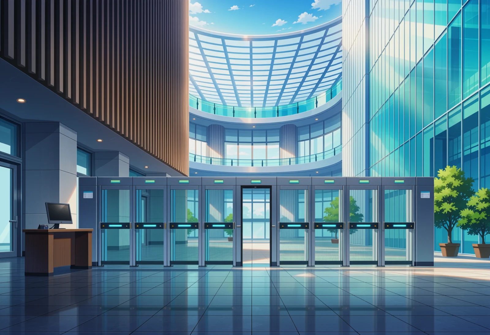
gate-lobby-2103
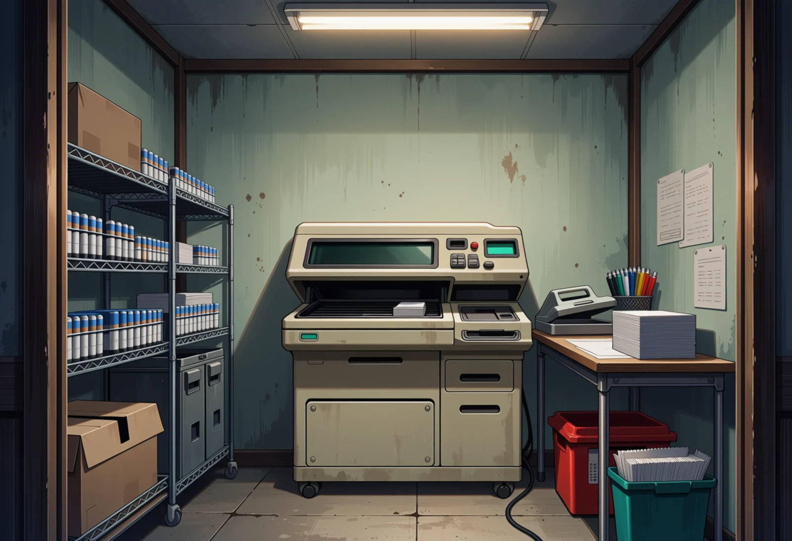
copyroom-copier-4203

office-reverse-5202-fix-a

dorm-worst-c
Style match: bay
The bay master repainted with RDBT. 0.35 to 0.55 keep the geometry; 0.65 starts to redesign the track.

bay (original)
The source for the repaint.
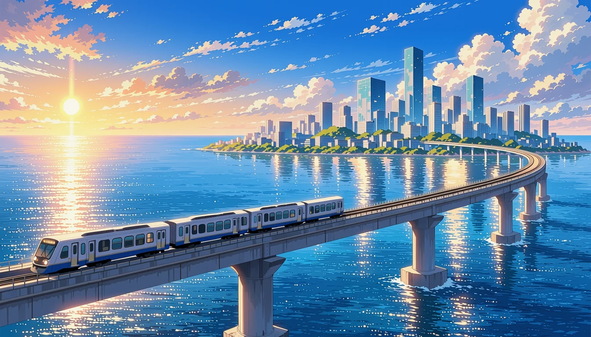
bay-rdbt-0.35
Reviewer: pass. Faithful and logical, flatter shading with visible lineart; clouds slightly busy. Style match 3/5.
Prompt
anime screenshot, anime coloring, 2d, cel shading, clean lineart, detailed anime background art, no humans, scenery, a white monorail train on a curving elevated concrete track on tall pillars high above a calm bay, an island city of glass office towers on the right, low morning sun on the left glittering on the sea, blue sky with white clouds.
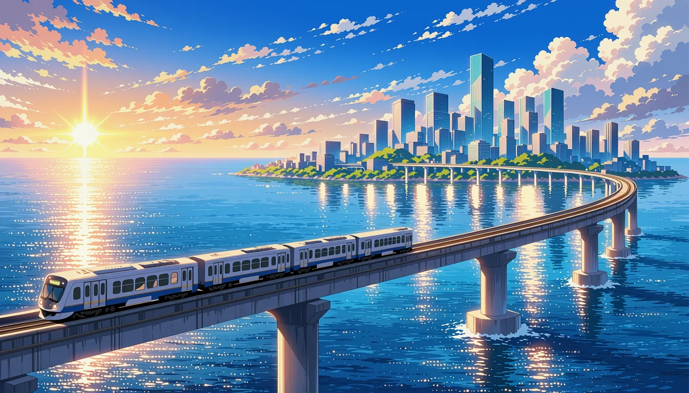
bay-rdbt-0.45
My pick for the style match: same composition, RDBT line and colour.
Reviewer: pass. Faithful composition, continuous supported beam, crisp lineart and flat cel colour matching house style. Style match 4/5.
Prompt
anime screenshot, anime coloring, 2d, cel shading, clean lineart, detailed anime background art, no humans, scenery, a white monorail train on a curving elevated concrete track on tall pillars high above a calm bay, an island city of glass office towers on the right, low morning sun on the left glittering on the sea, blue sky with white clouds.
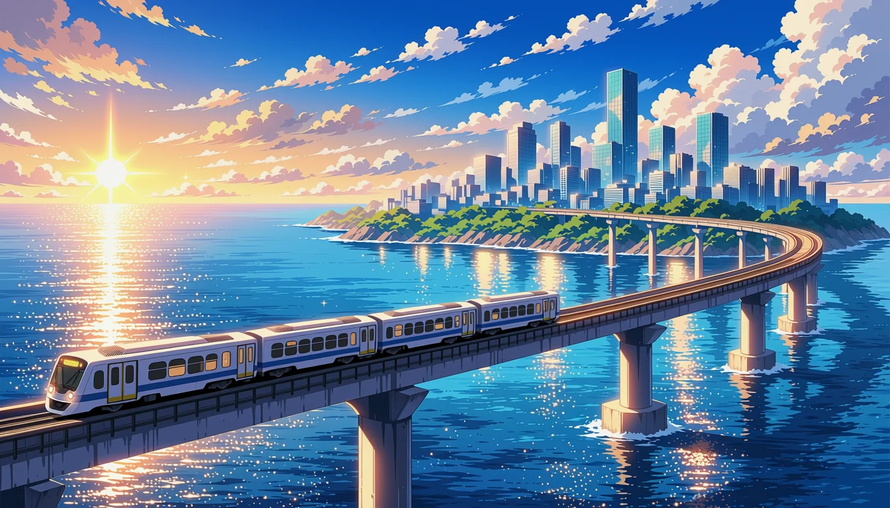
bay-rdbt-0.55
Also good; a little more RDBT, the train slightly redrawn.
Reviewer: pass. Faithful composition, continuous beam on pillars, clear dark lineart and cel shading close to house style. Style match 4/5.
Prompt
anime screenshot, anime coloring, 2d, cel shading, clean lineart, detailed anime background art, no humans, scenery, a white monorail train on a curving elevated concrete track on tall pillars high above a calm bay, an island city of glass office towers on the right, low morning sun on the left glittering on the sea, blue sky with white clouds.
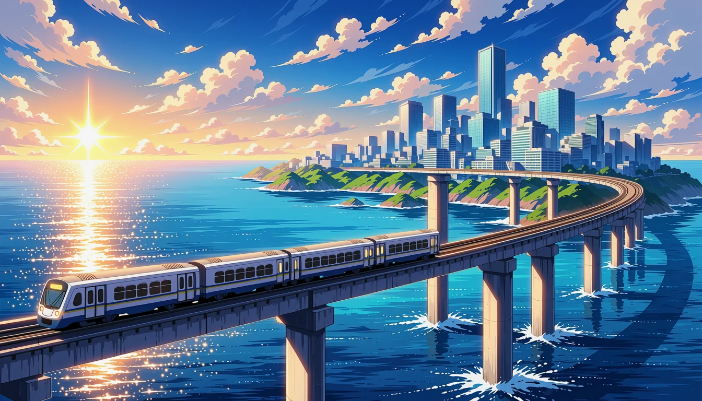
bay-rdbt-0.65
Too strong: the track starts to loop and pillars grow.
Reviewer: fail. Track loops back on itself on over-tall thin pillars with splashing surf and an odd dark band in the water; not a calm bay, geometry changed. Style match 4/5.
Prompt
anime screenshot, anime coloring, 2d, cel shading, clean lineart, detailed anime background art, no humans, scenery, a white monorail train on a curving elevated concrete track on tall pillars high above a calm bay, an island city of glass office towers on the right, low morning sun on the left glittering on the sea, blue sky with white clouds.
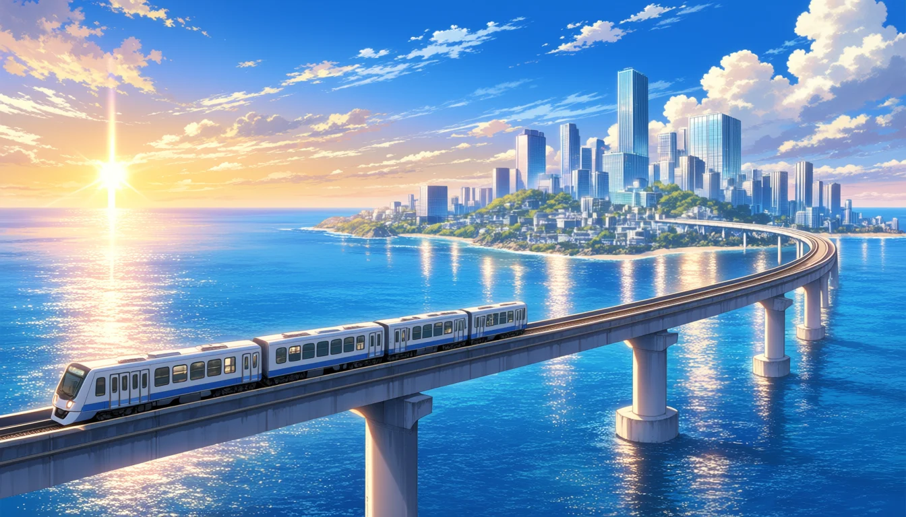
bay-oneobs-0.45
Reviewer: pass. Faithful and logical, softer rendering with light lineart. Style match 3/5.
Prompt
anime screenshot, anime coloring, 2d, cel shading, clean lineart, detailed anime background art, no humans, scenery, a white monorail train on a curving elevated concrete track on tall pillars high above a calm bay, an island city of glass office towers on the right, low morning sun on the left glittering on the sea, blue sky with white clouds.
Style match: side
The side view of one carriage. The windows must show only sea and sky.
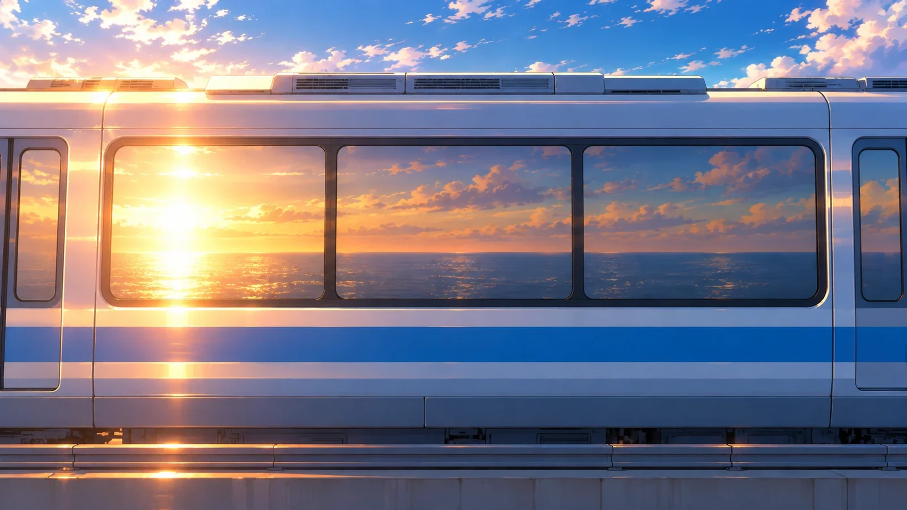
side (original)
The source for the repaint.
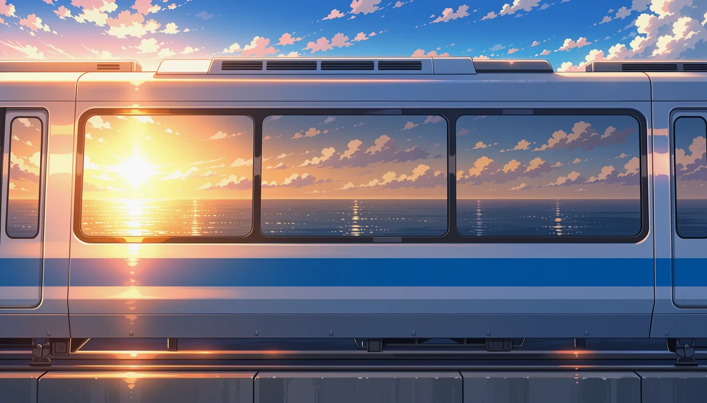
side-rdbt-0.35
Reviewer: pass. Faithful composition, only sea and sky reflected, crisp lineart and cel-shaded clouds close to house style. Style match 4/5.
Prompt
anime screenshot, anime coloring, 2d, cel shading, clean lineart, detailed anime background art, no humans, scenery, side view of one white monorail carriage filling the image end to end, a blue stripe along it, its windows reflecting only sea and sky, blue sky with small clouds above, low morning sun.
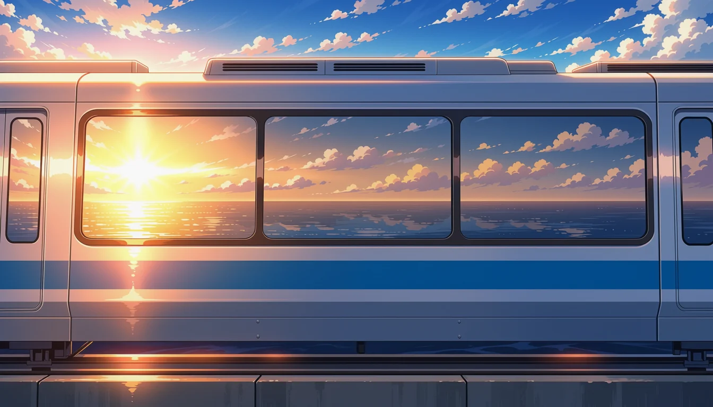
side-rdbt-0.45
My pick: RDBT look, nothing added.
Reviewer: pass. Faithful, only sea and sky reflected, clear lineart and flat cel colour; cloud blobs reflected on the sea are a minor oddity. Style match 4/5.
Prompt
anime screenshot, anime coloring, 2d, cel shading, clean lineart, detailed anime background art, no humans, scenery, side view of one white monorail carriage filling the image end to end, a blue stripe along it, its windows reflecting only sea and sky, blue sky with small clouds above, low morning sun.
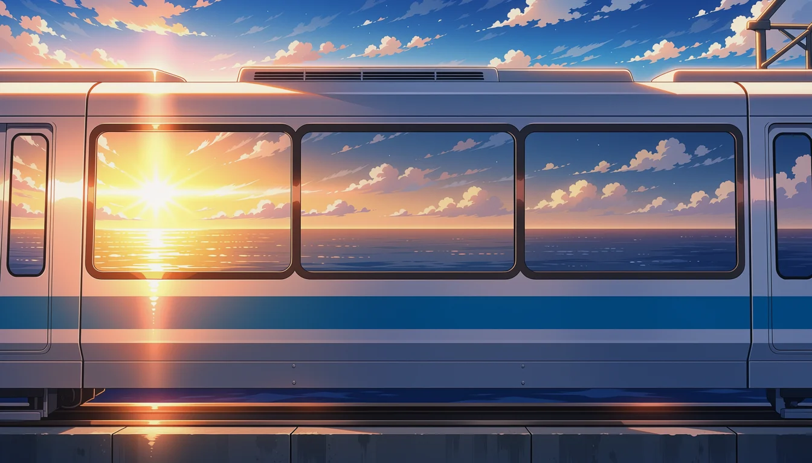
side-rdbt-0.55
Too strong: a steel gantry appears top right.
Reviewer: fail. A steel gantry/pole structure appears at top right; extra structure not allowed. Style match 4/5.
Prompt
anime screenshot, anime coloring, 2d, cel shading, clean lineart, detailed anime background art, no humans, scenery, side view of one white monorail carriage filling the image end to end, a blue stripe along it, its windows reflecting only sea and sky, blue sky with small clouds above, low morning sun.
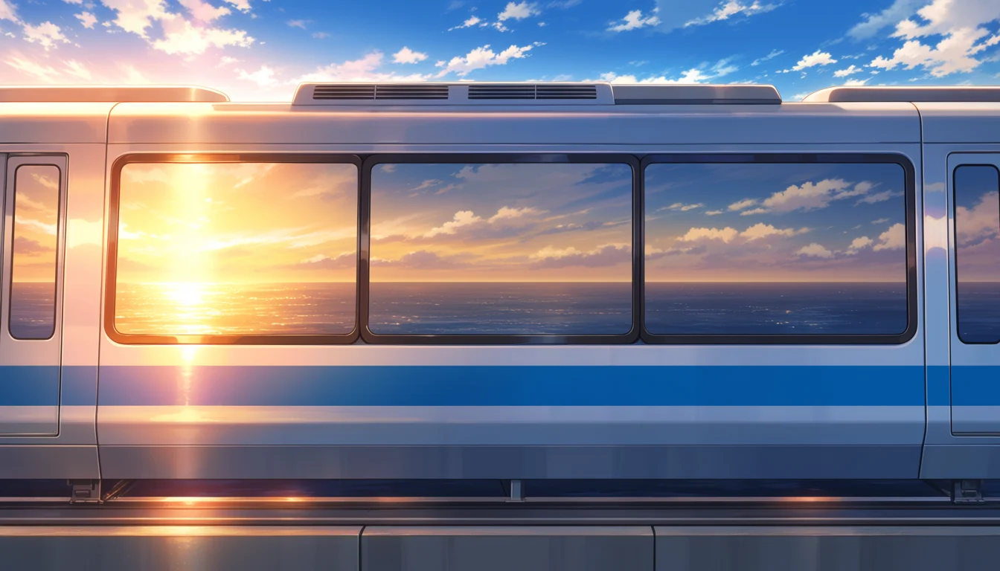
side-oneobs-0.45
Reviewer: pass. Faithful and clean but soft painterly shading, light lineart. Style match 3/5.
Prompt
anime screenshot, anime coloring, 2d, cel shading, clean lineart, detailed anime background art, no humans, scenery, side view of one white monorail carriage filling the image end to end, a blue stripe along it, its windows reflecting only sea and sky, blue sky with small clouds above, low morning sun.
Style match: interior
Straight-on side window from a seat. Only sea and sky in the window, and the carriage is about 15 m up, so no surf right below the sill.

interior (original)
The source for the repaint.
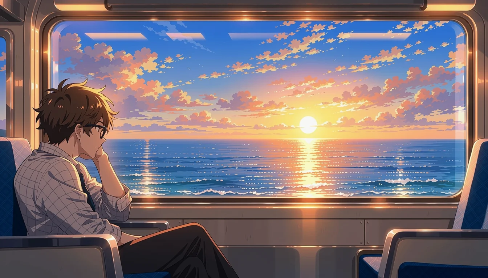
interior-rdbt-0.35
RDBT always draws white breaking waves under the sill, which puts the carriage at sea level. Every RDBT interior failed on this, even at 0.25 with "The sea far below is calm and flat, no waves."
Reviewer: fail. Surf crests line the bottom of the window, reading as sea level; otherwise good cel style. Style match 4/5.
Prompt
anime screenshot, anime coloring, 2d, cel shading, clean lineart, detailed anime background art, interior of a monorail train, a large side window seen straight on, only sea and sky in the window, low sun over the sea, blue seats, a man with brown hair and black glasses in a checked shirt sitting on the left looking out of the window.
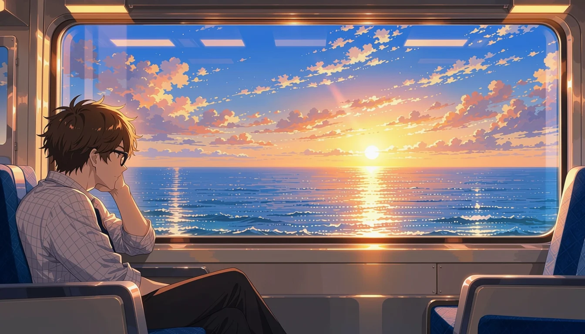
interior-calm-rdbt-0.25-701
The calm-sea line and the lowest strength: still surf under the sill.
Reviewer: fail. Rows of white-capped breaking waves right under the sill read as sea level, not 15 m up; otherwise faithful to the original. Style match 3/5.
Prompt
anime screenshot, anime coloring, 2d, cel shading, clean lineart, detailed anime background art, interior of a monorail train, a large side window seen straight on, only sea and sky in the window, low sun over the sea, blue seats, a man with brown hair and black glasses in a checked shirt sitting on the left looking out of the window. The sea far below is calm and flat, no waves.
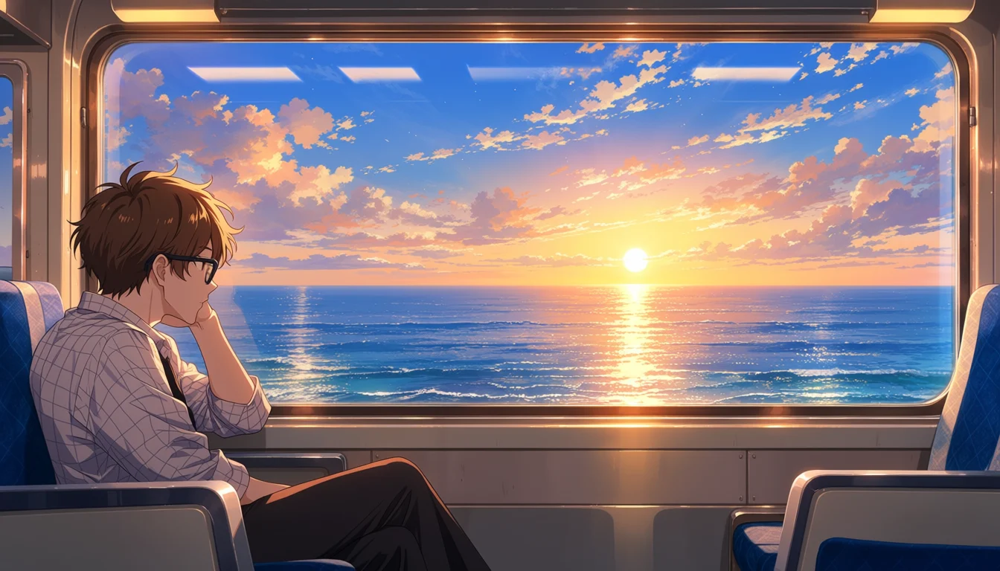
interior-oneobs-0.35
Reviewer: pass. Faithful composition, calm sea with light whitecaps, man with brown hair and glasses; soft shading, moderate lineart. Style match 3/5.
Prompt
anime screenshot, anime coloring, 2d, cel shading, clean lineart, detailed anime background art, interior of a monorail train, a large side window seen straight on, only sea and sky in the window, low sun over the sea, blue seats, a man with brown hair and black glasses in a checked shirt sitting on the left looking out of the window.
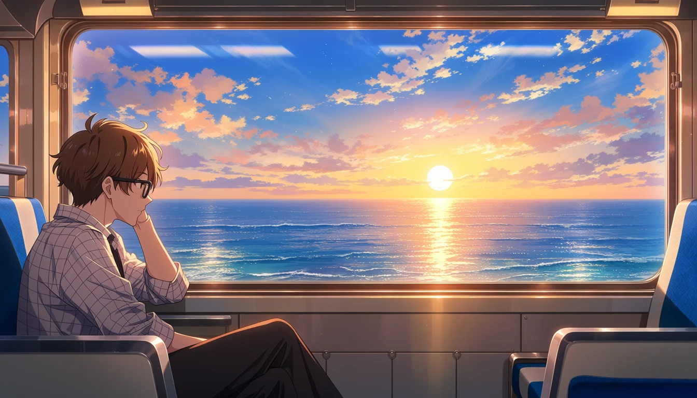
interior-oneobs-0.45
One Obsession keeps the sea calm, but its look is softer than the RDBT locations (reviewer style match 3/5).
Reviewer: pass. Faithful, calm open sea well below, only sea, sky and sun; softer rendering with light lineart. Style match 3/5.
Prompt
anime screenshot, anime coloring, 2d, cel shading, clean lineart, detailed anime background art, interior of a monorail train, a large side window seen straight on, only sea and sky in the window, low sun over the sea, blue seats, a man with brown hair and black glasses in a checked shirt sitting on the left looking out of the window.
Style match: side-empty
The empty-seat version, which is the monorail scene background.

side-empty (original)
Your interior with the man repainted as an empty seat and the edges extended to the game's background size (1216×832).
side-empty-calm-rdbt-0.35-701
My pick for the game background: RDBT look, calm sea. The calm-sea sentence fixed this one (the version with the man still gets surf).
Reviewer: pass. Close to the original with flat shading; the choppier waves near the bottom are borderline but not surf. Style match 4/5.
Prompt
anime screenshot, anime coloring, 2d, cel shading, clean lineart, detailed anime background art, no humans, scenery, interior of a monorail train, a large side window seen straight on, only sea and sky in the window, low sun over the sea, empty blue seats. The sea far below is calm and flat, no waves.
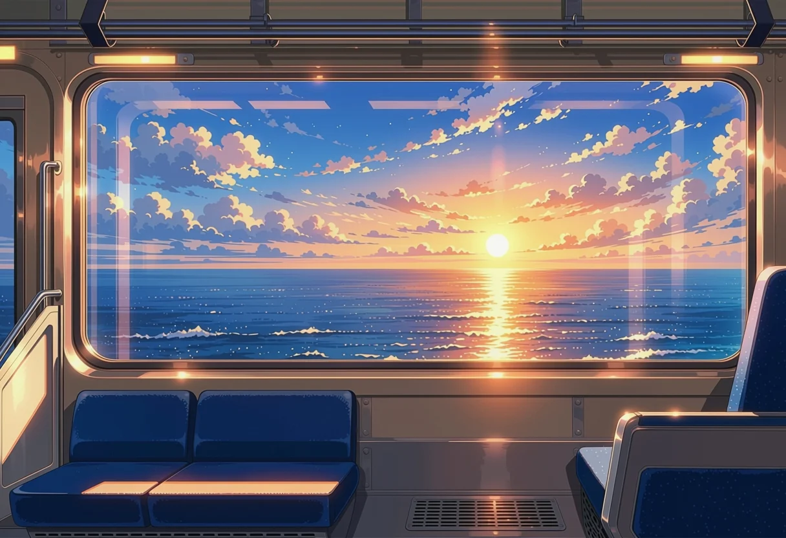
side-empty-calm-rdbt-0.35-702
Reviewer: pass. Faithful composition and clean cel style; whitecaps are a little strong near the sill but still read as open sea. Style match 4/5.
Prompt
anime screenshot, anime coloring, 2d, cel shading, clean lineart, detailed anime background art, no humans, scenery, interior of a monorail train, a large side window seen straight on, only sea and sky in the window, low sun over the sea, empty blue seats. The sea far below is calm and flat, no waves.
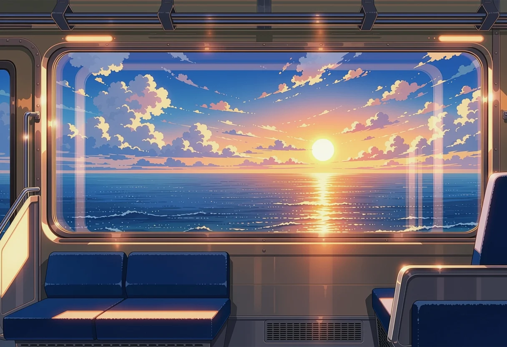
side-empty-calm-rdbt-0.45-702
Reviewer: pass. Faithful composition, only sea and sky, small distant whitecaps read as open sea seen from height. Style match 4/5.
Prompt
anime screenshot, anime coloring, 2d, cel shading, clean lineart, detailed anime background art, no humans, scenery, interior of a monorail train, a large side window seen straight on, only sea and sky in the window, low sun over the sea, empty blue seats. The sea far below is calm and flat, no waves.
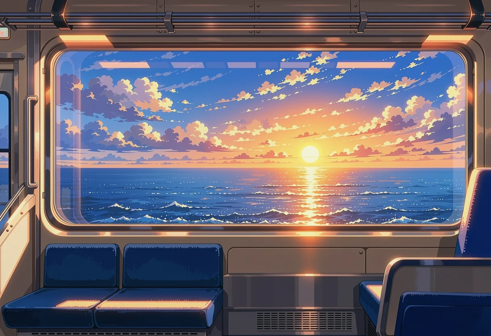
side-empty-rdbt-0.35
Without the calm-sea sentence: cresting waves at the sill.
Reviewer: fail. Faithful interior in good cel style, but rows of cresting whitecaps along the sill read as sea level. Style match 4/5.
Prompt
anime screenshot, anime coloring, 2d, cel shading, clean lineart, detailed anime background art, no humans, scenery, interior of a monorail train, a large side window seen straight on, only sea and sky in the window, low sun over the sea, empty blue seats.
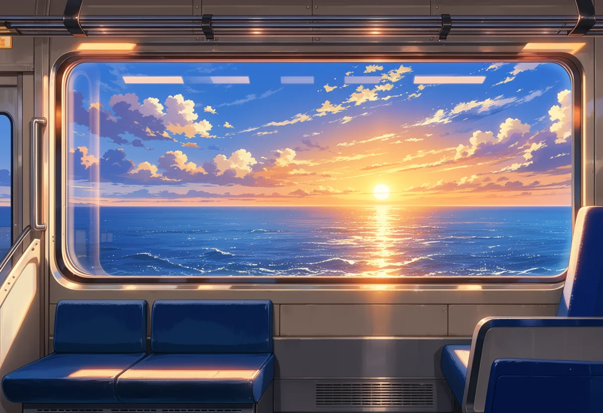
side-empty-oneobs-0.35
Reviewer: pass. Closest to the original layout, only sea and sky, no additions; low swells with some foam near the sill are borderline but not breaking surf. Style match 3/5.
Prompt
anime screenshot, anime coloring, 2d, cel shading, clean lineart, detailed anime background art, no humans, scenery, interior of a monorail train, a large side window seen straight on, only sea and sky in the window, low sun over the sea, empty blue seats.
Progress toward the island (outside shots)
Outside shots showing the train getting closer. What worked: crop the style-matched master around the island and repaint it at 0.45 to 0.55, so it stays the same place. What did not: asking for a new distance at high strength (0.75 to 0.85). The model then redraws the train as a long commuter train on ordinary rails and turns the island into a mountain coast. No far shot passed. One thing the reviewer noticed: in your bay master the nose of the train is at the left end, so it may be leaving the island rather than heading to it.
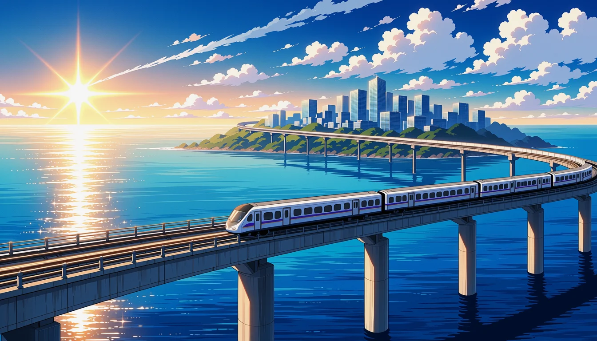
progress-mid-rdbt-0.85-711
Island at mid distance, five cars. Made from the original master at high strength; most seeds at this strength grew 8 to 12 car trains, ordinary rails or a mountain mainland.
Reviewer: pass. Island of towers sits right in the middle distance, 5-car train with a visible front on a supported curving deck; rails on a wide deck rather than a clean monorail beam, noted. Style match 4/5.
Prompt
anime screenshot, anime coloring, 2d, cel shading, clean lineart, detailed anime background art, no humans, scenery, a white monorail train on a curving elevated concrete track on pillars high above a calm bay, an island city of glass office towers in the middle distance, low morning sun glittering on the sea, blue sky with white clouds.
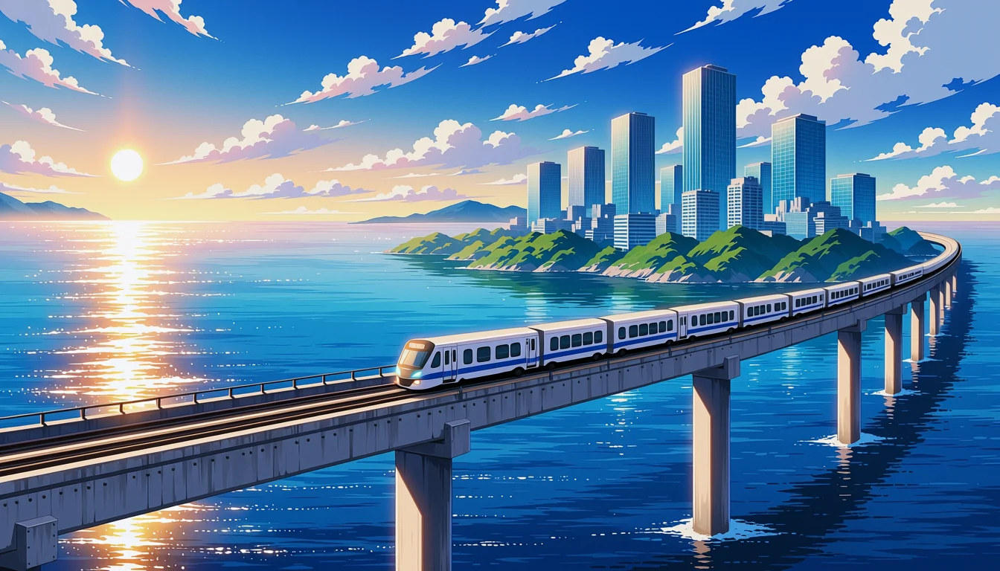
progress3-beam-rdbt-0.7-721
Rejected (Jørgen): the cars melt into the rail and become part of the track. From the style-matched bay (bay-rdbt-0.45) at 0.7, with "four cars" and "a single smooth concrete monorail beam without rails" in the prompt. Still eight or nine cars.
Reviewer: pass. Streamlined white and blue train matching the original, front and rear visible, continuous viaduct on pillars, island in the middle distance; long (about nine cars), and it adds distant mountains the original doesn't have. Style match 4/5.
Prompt
anime screenshot, anime coloring, 2d, cel shading, clean lineart, detailed anime background art, no humans, scenery, a short white monorail train of four cars on a single smooth concrete monorail beam without rails, the beam on tall pillars high above a calm bay, an island city of glass office towers, low morning sun glittering on the sea, blue sky with white clouds.
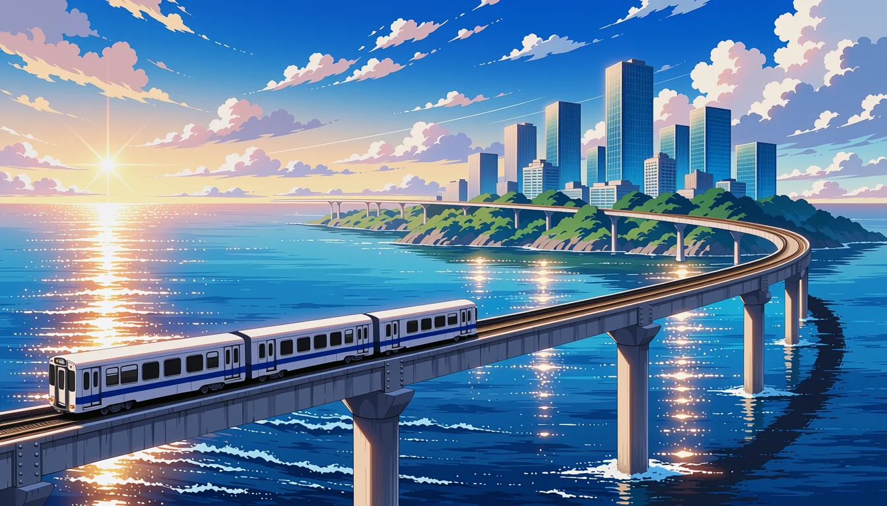
progress3-beam-rdbt-0.6-721
Rejected (Jørgen): the cars melt into the rail and become part of the track. Three cars, clean beam; the reviewer failed it because the nose is boxier than your train.
Reviewer: fail. Sensible three-car train, rear visible, sound viaduct and mid-distance island, but the flat-fronted commuter cab doesn't match the original's streamlined train. Style match 4/5.
Prompt
anime screenshot, anime coloring, 2d, cel shading, clean lineart, detailed anime background art, no humans, scenery, a short white monorail train of four cars on a single smooth concrete monorail beam without rails, the beam on tall pillars high above a calm bay, an island city of glass office towers, low morning sun glittering on the sea, blue sky with white clouds.
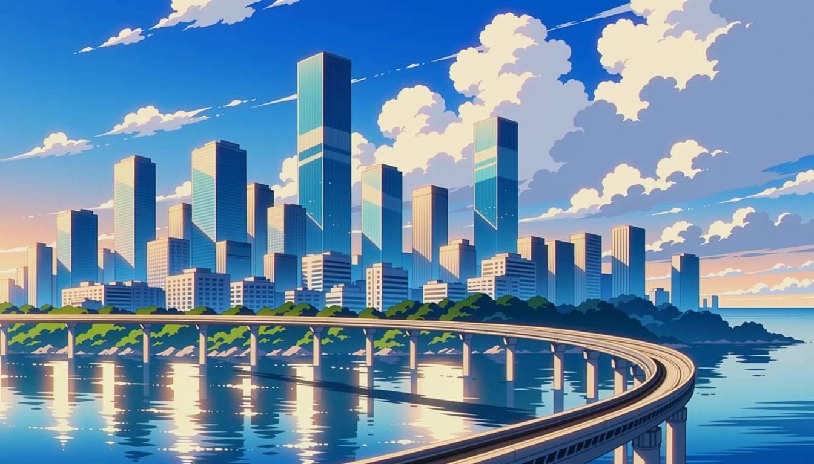
progress3-near-crop-rdbt-0.55-721
Near: the island half of bay-rdbt-0.45 cropped, scaled up and repainted at 0.55. Same towers and viaduct as the master, so it reads as the same place, closer.
Reviewer: pass. Clean continuous viaduct on pillars, large towers at the right distance, nothing extra added; the track runs along the shore rather than clearly into the city, and there's a slightly odd straight shadow band on the water. Style match 4/5.
Prompt
anime screenshot, anime coloring, 2d, cel shading, clean lineart, detailed anime background art, no humans, scenery, an island city of glass office towers close across the water, the elevated monorail track on pillars curving into the city, calm sea, blue sky with white clouds, morning sun.
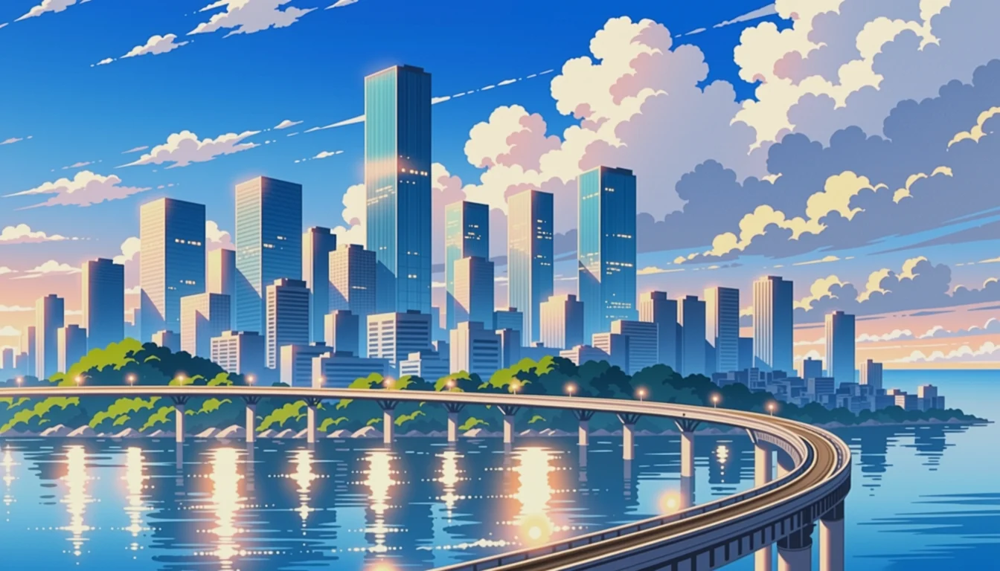
progress3-near-crop-rdbt-0.45-721
Same crop at 0.45; the reviewer saw a melted shape on the far viaduct.
Reviewer: fail. Glowing lamp orbs float in the air below the deck beside the pillars, and there are extra lamp posts; the track skirts the shore. Style match 4/5.
Prompt
anime screenshot, anime coloring, 2d, cel shading, clean lineart, detailed anime background art, no humans, scenery, an island city of glass office towers close across the water, the elevated monorail track on pillars curving into the city, calm sea, blue sky with white clouds, morning sun.